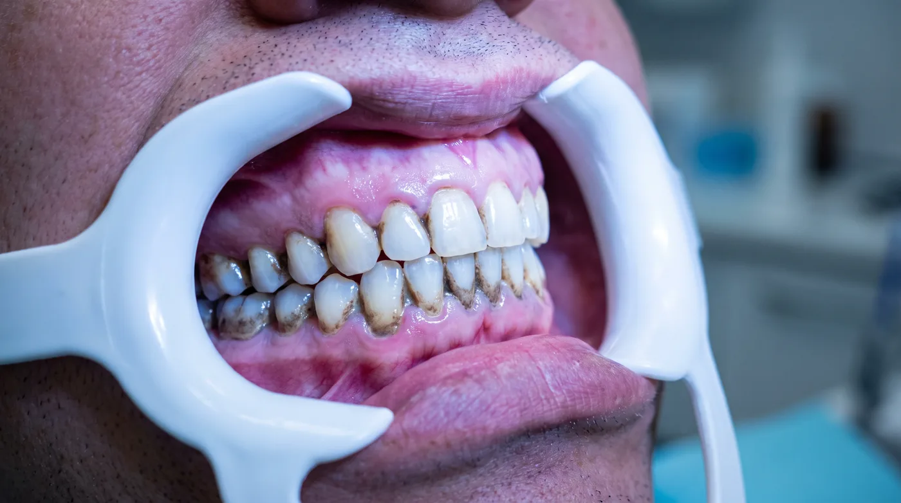

Что такое налёт на самом деле
Зубной налёт — это не «грязь» и не остатки еды. Это биоплёнка: структурированное сообщество микроорганизмов, заключённое в собственный защитный матрикс из полисахаридов.
Биоплёнка формируется в несколько стадий:
- Пелликула. Через несколько минут после чистки на эмали образуется тончайшая белковая плёнка из компонентов слюны. Это нормально и даже защитно.
- Первичная колонизация. В течение первых часов к пелликуле прикрепляются бактерии-пионеры.
- Созревание. Через 24–48 часов сообщество становится многослойным, внутри него меняется состав микрофлоры.
- Минерализация. Начиная с 24–72 часов минералы слюны откладываются в матриксе — биоплёнка твердеет и превращается в зубной камень.
Именно защитный матрикс объясняет, почему полоскание и антисептики не решают задачу: действующее вещество просто не проникает внутрь плёнки. Биоплёнку нужно разрушать механически.
Три типа отложений и три инструмента
| Тип отложений | Как выглядит | Чем убирают |
|---|---|---|
| Мягкий налёт, биоплёнка | Незаметен без окрашивания | Воздушно-абразивная обработка, щётка, флосс |
| Пигментированный налёт | Коричневые, серые, чёрные наслоения | Воздушно-абразивная обработка |
| Зубной камень | Твёрдые наслоения у десны | Ультразвуковой скалер, ручные инструменты |
Отсюда простое следствие: одним инструментом приём не закрывается. Ультразвук не снимет пигмент из фиссур, а пескоструйный наконечник не разрушит минерализованный камень.

Почему налёт делают видимым
В современном протоколе проведения процедуры биоплёнку окрашивают индикатором перед началом работы. Врач получает карту обработки, а пациент — наглядное объяснение, где его щётка не справляется. Разбор протокола — в отдельной статье.
Почему у одних быстрее, чем у других
- Слюна. Её количество и минеральный состав напрямую влияют на скорость минерализации. Сухость во рту ускоряет процесс.
- Питание. Частые перекусы, особенно углеводные, поддерживают кислую среду и подпитывают бактерии.
- Курение. Смолы дают плотный пигментированный налёт, который к тому же служит основой для новых наслоений.
- Окрашивающие напитки. Кофе, чёрный чай, красное вино — источник пигмента.
- Анатомия. Скученность зубов, глубокие фиссуры, нависающие края реставраций создают зоны, недоступные для щётки.
- Конструкции. Брекеты, ретейнеры, мосты и импланты усложняют домашний уход.
Отдельно про налёт курильщика
Это самый плотный тип пигментированных отложений. Смолы проникают в микропоры эмали и в шероховатости на границе с реставрациями, поэтому налёт держится крепче обычного.
С ним быстрее справляется крупная фракция на основе бикарбоната натрия — угловатая частица снимает плотное наслоение эффективнее округлой. Мелкая фракция тоже справится, но потратит больше времени и материала. Сравнение основ — в отдельном материале.
Что реально снижает скорость образования
- Гладкая поверхность. После обработки поверхность полируют: на шероховатости налёт закрепляется быстрее.
- Межзубное пространство. Флосс или ёршик — именно там начинается большинство проблем.
- Регулярность визитов. Профилактика раз в 4–6 месяцев не даёт отложениям накопиться до «тяжёлого» состояния.
- Пересмотр перекусов. Реже — значит меньше кислотных атак в сутки.
Материал носит информационный характер и не заменяет консультацию специалиста. Имеются противопоказания, необходима консультация врача.